Data visualisation
 Visualise all the things
Visualise all the things
Learning Objectives
Basic
- Understand what types of graphs are best for different types of data
- Create common types of graphs with ggplot2
- bar plot (
geom_bar()) - violin plot (
geom_violin()) - boxplot (
geom_boxplot()) - histogram (
geom_histogram()) - density plot (
geom_density()) - scatter plot (
geom_point()) - line graph (
geom_smooth())
- bar plot (
Intermediate
- Represent factorial designs with different colours or facets
- Superimpose different types of graphs
- boxplot on violin plot
- line graph on scatter plot
- Add lines to graphs
- Deal with overlapping data
- Use the
viridispackage to set colours - Set custom labels
Advanced
- Create less common types of graphs (e.g., heat map)
- Adjust axes (e.g., flip coordinates, set axis limits)
- Change the theme
- Create animated plots with
gganimate
Prep
- Read Chapter 3 of R for Data Science
Resources
- ggplot2 cheat sheet
- ggplot2 documentation
- The R Graph Gallery (this is really useful)
- R Graphics Cookbook by Winston Chang
- The viridis color palettes
- ggplot extensions
- plotly for creating interactive graphs
Examples
# libraries needed for these graphs
library(tidyverse)
library(viridis)Data
Here we’ve created some data frames with different types of data.
demoghasheightandagefor 500 men and 500 women.x_vs_yhas two correlated continuous variables (xandy)overlaphas two correlated ordinal variables and 1000 observations so there is a lot of overlap
First, think about what kinds of graphs are best for representing these different types of data.
demog <- tibble(
sex = rep(c("male", "female"), each = 500),
height = c(rnorm(500, 70, 4), rnorm(500, 65, 3.5)),
age = rpois(1000, 3) + 20
)
x_vs_y <- tibble(
x = rnorm(100)
) %>%
mutate(y = x + rnorm(100, 0, 0.5))
overlap <- tibble(
x = rbinom(1000, 10, 0.5)
) %>%
mutate(y = x + rbinom(1000, 20, 0.5))Violin plot
ggplot(demog, aes(sex, height, fill=sex)) +
geom_violin(
trim = FALSE,
draw_quantiles = c(0.25, 0.5, 0.75),
alpha=0.5
)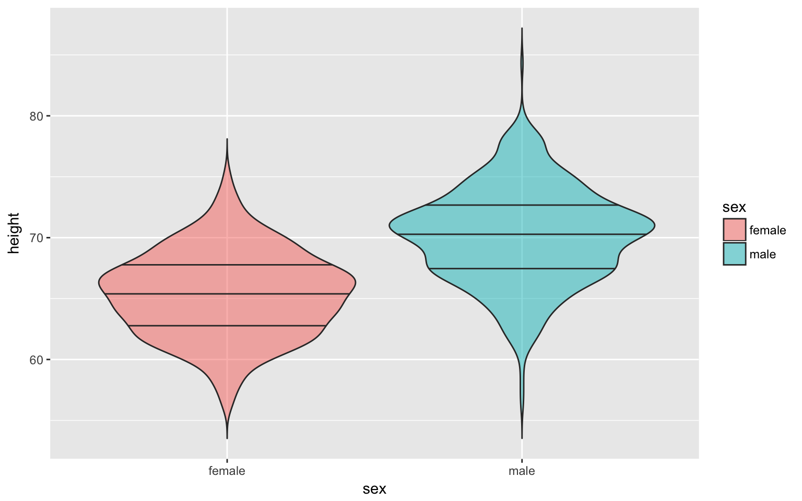
Boxplot
ggplot(demog, aes(sex, height, fill=sex)) +
geom_boxplot(alpha=0.5)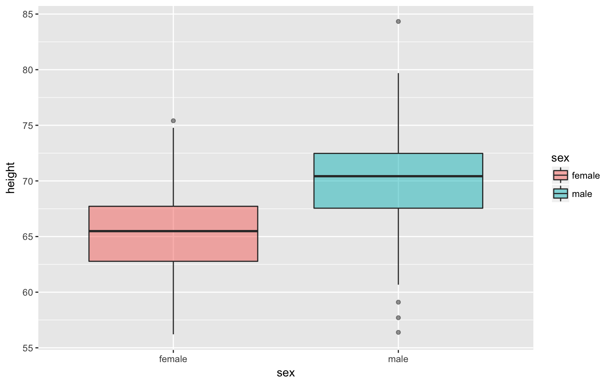
Violinbox plot
To demonstrate the use of facet_grid() for factorial designs, I created a new column called agegroup to split the data into participnats older than the meadian age or younger than the median age. I also got rid of the legend because it was redundant with the x-axis labels and changed the default colours.
demog %>%
mutate(agegroup = ifelse(age<median(age), "Younger", "Older")) %>%
ggplot(aes(sex, height, fill=sex)) +
geom_violin(trim = FALSE, alpha=0.5) +
geom_boxplot(width = 0.25, fill="white") +
facet_grid(.~agegroup) +
scale_fill_manual(values = c("orange", "green"), guide=FALSE)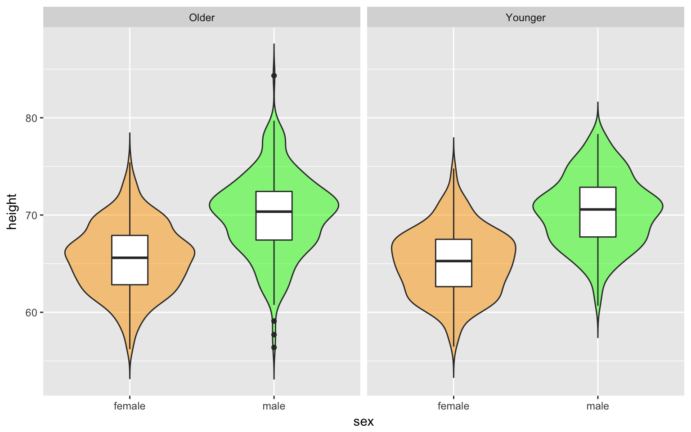
Bar plot
I’ll show you how to make these so you can recreate others’ graphs, but we really should #barbarplots.
# calculate mean and SD for each sex
demog %>%
group_by(sex) %>%
summarise(
mean = mean(height),
sd = sd(height)
) %>%
ggplot(aes(sex, mean, fill=sex)) +
geom_bar(stat="identity", alpha = 0.5) +
geom_errorbar(aes(ymin = mean - sd, ymax = mean + sd), width = 0.25)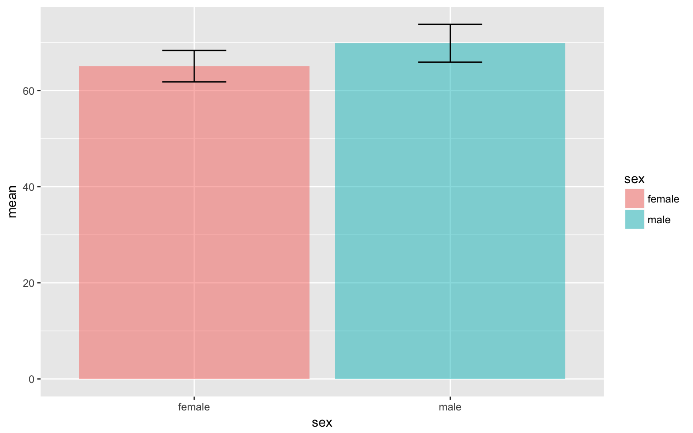
Histogram
ggplot(demog, aes(height, fill=sex)) +
geom_histogram(binwidth = 1, alpha=0.5)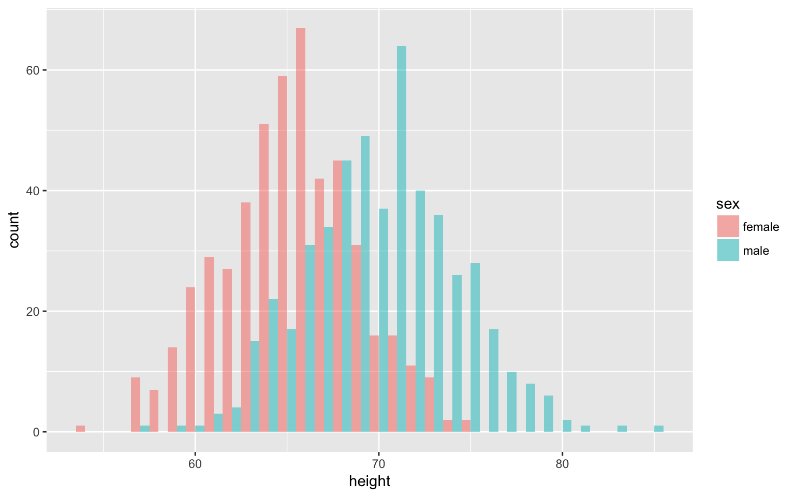
Density plot
ggplot(demog, aes(height, fill=sex)) +
geom_density(alpha=0.5) +
geom_vline(xintercept = mean(demog$height)) +
xlim(45, 90) +
xlab("Height (in inches)")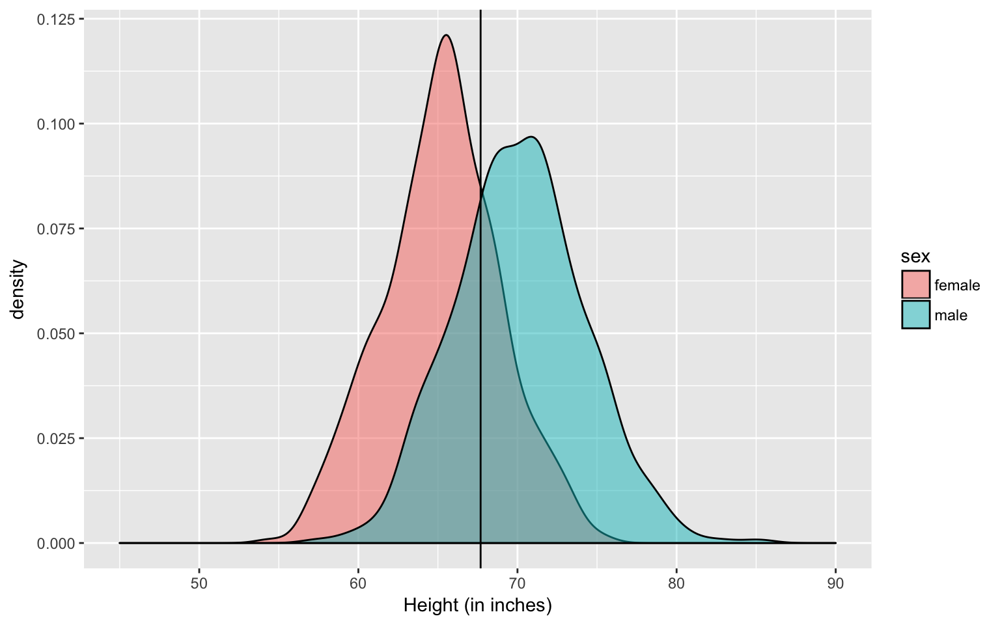
Scatter plot
ggplot(x_vs_y, aes(x, y)) +
geom_point()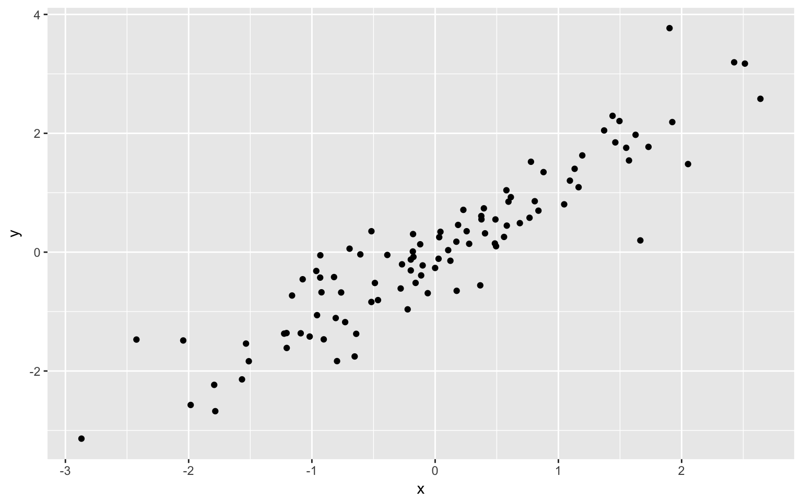
Line graph
ggplot(x_vs_y, aes(x, y)) +
geom_smooth(method="lm")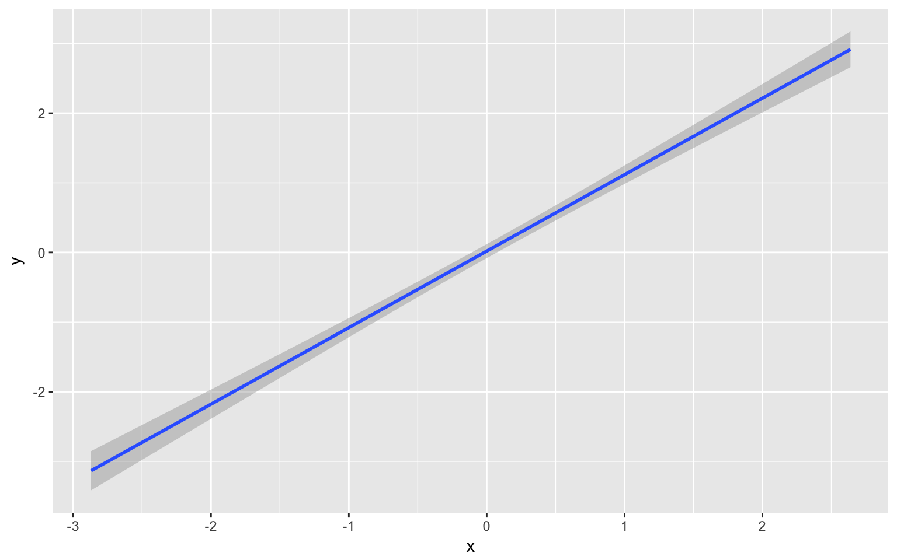
Combined scatter and line graph
ggplot(x_vs_y, aes(x, y)) +
geom_smooth(method="lm") +
geom_point()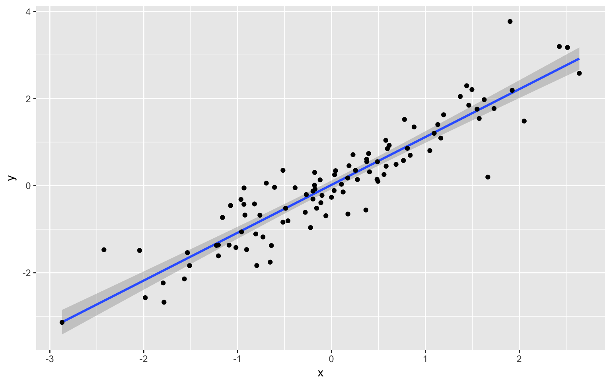
Overlapping Data
You can deal with overlapping data points (very common if you’re using Likert scales) by reducing the opacity of the points. You need to use trial and error to adjust these so they look right.
ggplot(overlap, aes(x, y)) +
geom_point(size = 5, alpha = .05) +
geom_smooth(method="lm")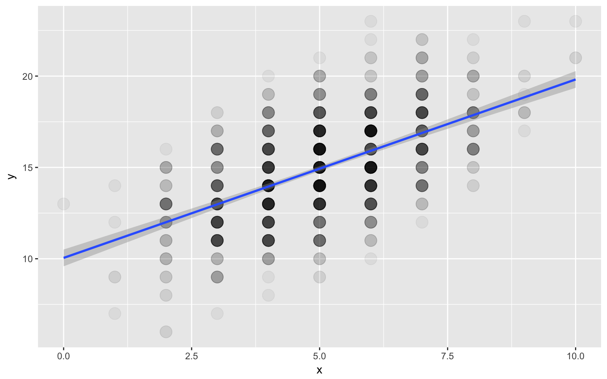
Alternatively, you can transform your data to create a count column and use the count to set the dot colour.
overlap %>%
group_by(x, y) %>%
summarise(count = n()) %>%
ggplot(aes(x, y, color=count)) +
geom_point(size = 5) +
scale_color_viridis()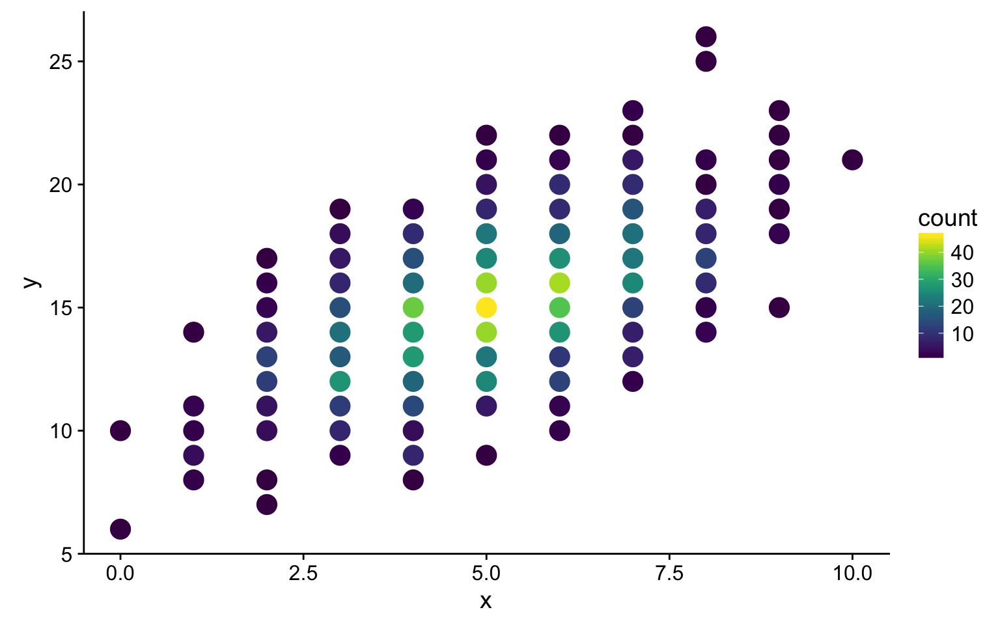
Or you can set the size of the dot proportional to the number of overlapping observations.
overlap %>%
group_by(x, y) %>%
summarise(count = n()) %>%
ggplot(aes(x, y, size=count)) +
geom_point(colour = "#663399")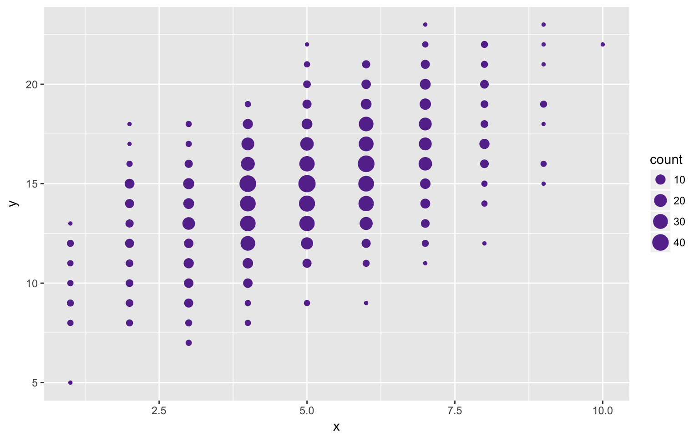
Heat map
# generate two sets of correlated variables (a and b)
heatmap <- tibble(
a1 = rnorm(100),
b1 = rnorm(100)
) %>%
mutate(
a2 = a1 + rnorm(100),
a3 = a1 + rnorm(100),
a4 = a1 + rnorm(100),
b2 = b1 + rnorm(100),
b3 = b1 + rnorm(100),
b4 = b1 + rnorm(100)
) %>%
cor() %>% # create the correlation matrix
as.tibble() %>% # make it a data frame
rownames_to_column(var = "V1") %>% # set rownames as V1
gather("V2", "r", a1:b4) # wide to long (V2)
ggplot(heatmap, aes(V1, V2, fill=r)) +
geom_tile() +
scale_fill_viridis()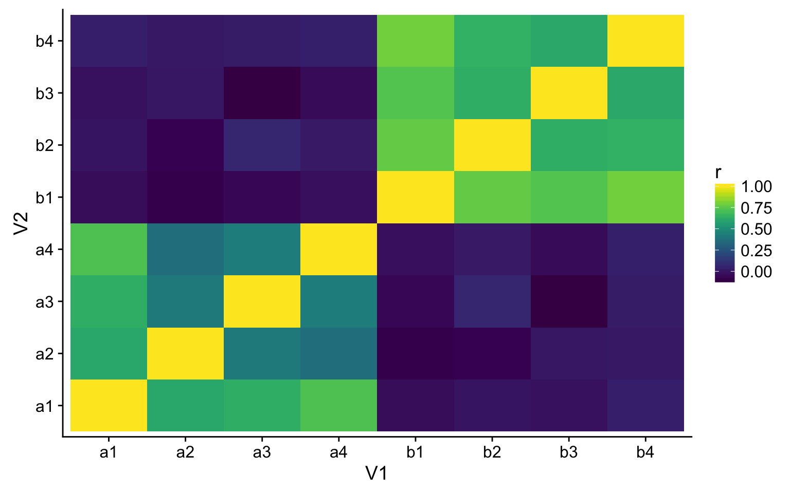
Exercises
1 continuous variable
Generate a vioin plot, boxplot, histogram, density plot, and bar plot for the following data.
# dog weights estimated from http://petobesityprevention.org/ideal-weight-ranges/
dogs <- tibble(
breed = rep(c("beagle", "boxer", "bulldog"), each = 100),
weight = c(
rnorm(100, 24, 6),
rnorm(100, 62.5, 12.5),
rnorm(100, 45, 5)
)
)2 continuous variables
Generate a combined scatter and line graph representing the relationship between…